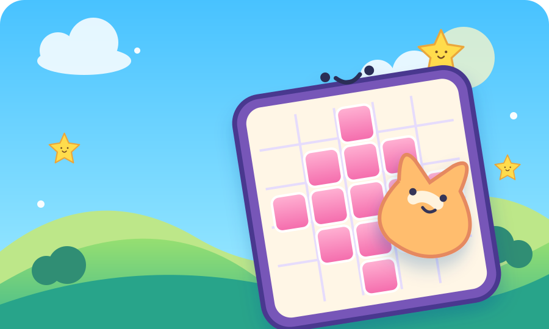

MUY PRONTO
Más aventuras en camino
Esta colección acaba de empezar. Vuelve para descubrir qué viene después.

Una partida rápida, un reto nuevo y un trofeo que conquistar. Entra y juega a tu ritmo.
Explorar juegos →Esta colección acaba de empezar. Vuelve para descubrir qué viene después.
🔒 Juega sin registrarte. Tus partidas y logros viven solo en tu dispositivo.
Descubre logros por jugar, dominar cada juego y explorar nuevos retos. Cada premio tiene su propia insignia.
Todo se guarda en este dispositivo. Puedes descargar una copia para restaurarla más adelante o crear una tarjeta de tu arcade.
Descarga games.zip con partidas, puntuaciones y premios. Guárdalo en un lugar seguro.
Selecciona tu archivo games.zip para restaurar aquí el progreso que guardaste.